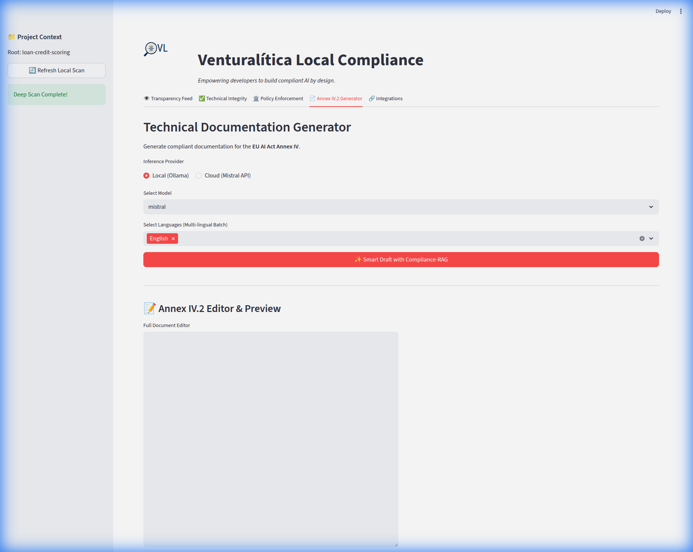

Nivel 4: El Arquitecto (Generación Anexo IV) 🔴
Objetivo: Automatizar la creación de documentos regulatorios de 50+ páginas.
Prerrequisito: Nivel 3 (El Auditor)
1. El Cuello de Botella: "Documentación Técnica"
De acuerdo con el Artículo 11 y Anexo IV de la EU AI Act, los sistemas de Alto Riesgo (como Scoring de Crédito) requieren Documentación Técnica exhaustiva. Escribir esto manualmente toma semanas.
2. La Solución: Cumplimiento Generativo
Usamos tus Políticas (Nivel 1 & 2) y Evidencia (Nivel 2/3) para invocar a un LLM que redacte el documento por ti.
Venturalítica soporta: - Nube: Mistral (vía API). - Local: Ollama (Propósito general). - Soberana (NUEVO): ALIA (Nativo Español GGUF vía Llama.cpp) - Experimental.
El Upgrade
Continuamos trabajando en el proyecto de "Scoring de Crédito".
Ejecutar la Auditoría de Alto Riesgo
Asegúrate de haber corrido los pasos de recolección:
# Ejecutar la Auditoría de Gobernanza de Artículo 10 (Datos) y Artículo 15 (Modelo)
with vl.monitor("loan_annex_audit"):
# 1. Verificar Datos de Entrenamiento (Art 10)
vl.enforce(data=train_df, policy="data_governance.yaml", target="class")
# 2. Verificar Rendimiento del Modelo (Art 15)
vl.enforce(
data=val_df.assign(prediction=model.predict(val_df)),
policy="model_policy.yaml",
target="prediction"
)
3. Generar el Documento
- Abre el Dashboard:
uv run venturalitica ui. - Ve a la pestaña "Generador Anexo IV".
- Selecciona Proveedor: Nube (Mistral), Local (Ollama), o Soberana (ALIA - Experimental).
-
Click en "Generar Anexo IV".

El Proceso de Generación
Observa los logs. El Sistema actúa como un Equipo de Agentes:
- Scanner: Lee tu
trace.json(La Evidencia). - Planner: Decide qué secciones del Anexo IV aplican a tu tipo de modelo específico.
- Writer: Redacta "Sección 2.c: Arquitectura" usando el
summary()de tu código Python real. - Critic: Revisa el borrador contra el estándar ISO 42001.
Resultado: Un archivo markdown (Annex_IV.md) que cita tus puntajes de precisión específicos (ej. Paridad Demográfica: 0.92) como prueba de seguridad.
4. Seleccionando tu LLM
| Característica | Nube (Mistral API) | Local (Ollama) | Soberana (ALIA - Experimental) |
|---|---|---|---|
| Privacidad | ☁️ Transporte Encriptado | 🔒 100% Offline | 🛡️ Bloqueado por Hardware |
| Soberanía | 🇫🇷 Alojado en UE | ✅ Genérico | 🇪🇸 Nativo Español |
| Velocidad | ⚡ Rápido (Modelo Grande) | 🐢 Más lento | 🐢 Lento (Experimental) |
| Caso de Uso | Pulido Final de Alta Calidad | Testing Iterativo | Solo Investigación |
Actualmente ofrecemos ALIA como una feature experimental para organizaciones pilotando IA soberana nativa en español.
Feature Experimental y Requisitos de Hardware
ALIA es un modelo de 40B parámetros. Está marcado como EXPERIMENTAL y requiere recursos de hardware significativos:
- RAM/VRAM: ~41GB requeridos (cuantización Q8).
- GPU: Se recomienda una GPU de gama alta (ej. RTX 3090/4090 con 24GB+) para velocidades usables.
- Rendimiento: En hardware de consumo o GPUs más pequeñas (como RTX 2000), la inferencia correrá efectivamente en CPU y será muy lenta.
5. Exportar a PDF
Por defecto, generamos Annex_IV.md (Markdown) para control de versiones. Para convertir esto a un PDF de grado regulatorio:
6. Mensajes para Llevar a Casa 🏠
- La Documentación es una Función:
f(Evidencia) -> Documento. Nunca escribas lo que puedes generar. - LiveTrace: Si tu precisión cae mañana, regenera el documento. Reflejará el estado actual, previniendo la "Deriva de Documentación".
- El Bucle Completo: Has ido de Código -> Política (N1) -> Ops (N2) -> Evidencia (N3) -> Documento Legal (N4).
🎉 ¡Felicidades!
Has completado la Academia Venturalítica. Ahora estás listo para integrar esto en tu propio pipeline CI/CD.
👉 Profundización: Integración MLOps 👉 Profundización: Bucle de Entrenamiento